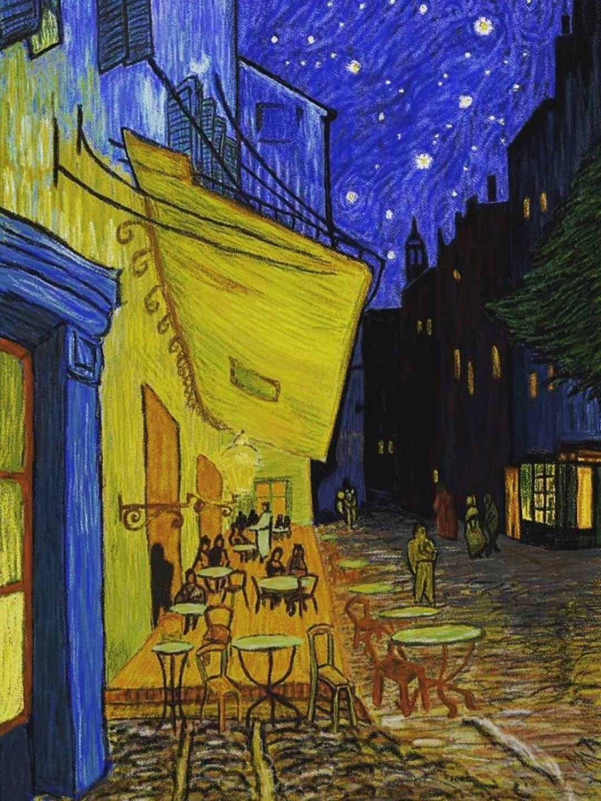

Café Terrace at Night
(2019)
1888.9.12
빌레민에게.
푸른 밤, 카페테라스의 커다란 가스등이 불을 밝히고 있어.
그 위로는 별이 빛나는 파란 하늘이 보이지.
아를에 와 바로 이곳에서 밤을 그리는 것은 매우 놀라운 일이야.
창백하리만치 옅은 하얀 빛은 그저 그런 밤 풍경을 제거해버리는 유일한 방법이지.
나는 검은색을 전혀 사용하지 않고 아름다운 파란색과 보라색, 초록색만을 사용했어.
그리고 밤을 배경으로 빛나는 광장은 노란색으로 그렸단다.
특히 이 밤하늘에 별을 찍어 넣는 순간은 정말 행복했단다.